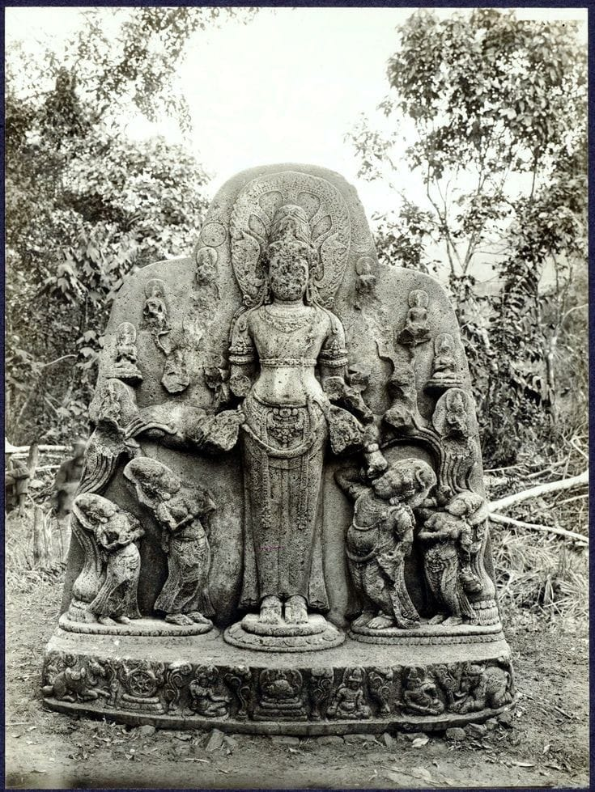

Kerajaan Melayu

Kerajaan Melayu, yang juga dikenal sebagai kerajaan-kerajaan Melayu di wilayah Sumatra dan Semenanjung Malaya, memiliki sejarah yang kaya dan beragam, terutama antara abad ke-7 hingga ke-15.
Pendirian dan Perkembangan Awal
Kerajaan Melayu pertama yang terkenal adalah Sriwijaya, yang berdiri sekitar abad ke-7. Sriwijaya adalah kerajaan maritim yang berpusat di Palembang, Sumatra, dan dikenal sebagai pusat perdagangan serta penyebaran agama Buddha di Asia Tenggara.
Puncak Kejayaan
Sriwijaya mencapai puncak kejayaannya pada abad ke-9 hingga ke-10, menguasai jalur perdagangan antara India dan Tiongkok. Kerajaan ini menjalin hubungan baik dengan berbagai negara dan memiliki kekuatan militer yang signifikan.
Kerajaan Melayu Lainnya
- Kerajaan Melayu di Malaka: Didirikan oleh Parameswara pada abad ke-15, Malaka menjadi pusat perdagangan strategis dan pusat penyebaran Islam di wilayah tersebut.
- Kerajaan Johor: Melanjutkan warisan Malaka setelah jatuh ke tangan Portugis pada tahun 1511, Johor menjadi salah satu kerajaan Melayu terpenting di Semenanjung Malaya.
Pengaruh Budaya
Kerajaan-kerajaan Melayu memiliki pengaruh besar terhadap perkembangan bahasa, sastra, dan budaya di kawasan tersebut. Bahasa Melayu menjadi lingua franca di banyak daerah, dan banyak karya sastra muncul pada masa ini.
Penjajahan dan Kemunduran
1. Penjajahan
- Kedatangan Eropa: Pada abad ke-15 dan 16, penjajah Eropa, terutama Portugis, Belanda, dan Inggris, mulai memasuki wilayah Asia Tenggara karena tertarik pada jalur perdagangan rempah-rempah yang menguntungkan.
- Perebutan Kekuasaan: Persaingan antara kekuatan Eropa mengakibatkan konflik dan peperangan yang melemahkan kerajaan-kerajaan Melayu.
- Dominasi Belanda: Setelah Portugis, Belanda mengambil alih kontrol perdagangan dengan mendirikan VOC dan menaklukkan wilayah penting seperti Malaka pada abad ke-17.
2. Kemunduran
- Perebutan Kekuasaan Internal: Banyak kerajaan Melayu mengalami konflik internal karena perebutan tahta maupun ketidakpuasan rakyat.
- Ekonomi Melemah: Kontrol Eropa atas perdagangan menyebabkan banyak kerajaan kehilangan pendapatan utama.
- Kehilangan Otonomi: Kerajaan-kerajaan Melayu menjadi vasal atau koloni Eropa, kehilangan kemerdekaannya.
- Penyebaran Islam: Walau Islam berkembang, konflik antara kerajaan Islam dan penjajah juga memperlemah stabilitas kerajaan.
Kritik Seni: Arca Amoghapasa
1. Deskripsi
Judul: Arca Amoghapasa
Tahun: Abad ke-8 hingga ke-9 Masehi, masa Kerajaan Mataram Kuno.
Seniman: Tidak diketahui
Teknik: Pahatan pada batu atau logam dengan detail tinggi
Bahan: Batu andesit, terkadang logam
2. Analisis Formal
Arca ini menggambarkan sosok Buddha memegang tali sebagai simbol penunduk kekuatan jahat. Arca menunjukkan postur tenang dan simetris, khas seni Buddha. Detail pakaian dan pose mencerminkan keterampilan seniman yang tinggi.
3. Interpretasi
Amoghapasa dikenal dalam tradisi Mahayana sebagai pelindung yang tak pernah gagal. Tali pasasa melambangkan daya tarik spiritual untuk membawa makhluk menuju pencerahan.
4. Evaluasi
Penilaian: Karya seni dengan detail teknis dan nilai spiritual tinggi.
Kelebihan: Detail rapi, simbolisme kuat, dan bahan tahan lama.
Kekurangan: Pose dianggap kaku dan tidak ekspresif, namun sesuai konteks religius.
5. Kesimpulan
Arca Amoghapasa adalah karya yang kuat secara budaya dan spiritual. Ukiran masih terlihat jelas hingga kini dan mencerminkan nilai seni serta kepercayaan masa lalu.